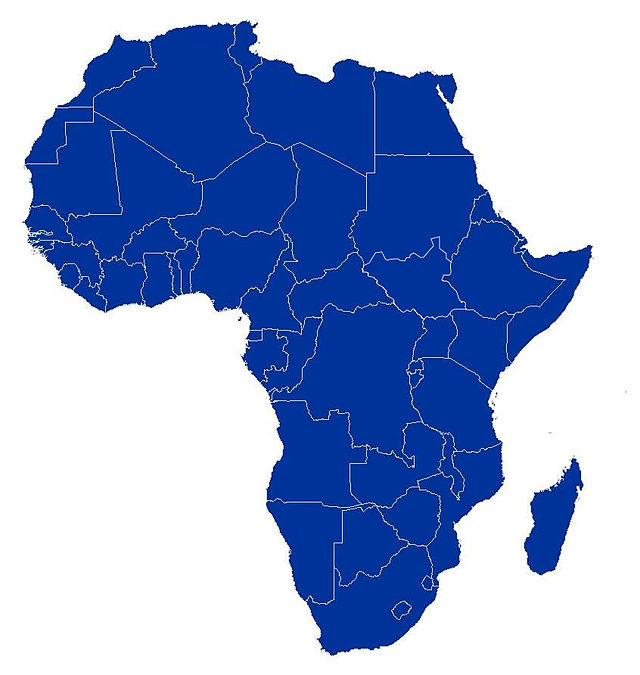

Africanist
Home
About
African Countries
Algeria
Angola
Benin
Botswana
Burkina Faso
Burundi
Cameroon
Cape Verde
Central African Rep
Chad
Comoros
Congo
Cote d'Ivoire
Djibouti
Egypt
Equatorial Guinea
Eritrea
Ethiopia
Gabon
Gambia
Ghana
Guinea
Guinea-Bisssau
Kenya
Lesotho
Liberia
Libya
Madagascar
Malawi
Mali
Mauritius
Morocco
Mozambique
Namibia
Niger
Nigeria
Rwanda
Sao Tome
Senegal
Seychelles
Sierra Leone
Somalia
South Africa
Sudan
Swaziland
Tanzania
Togo
Tunisia
Uganda
Zambia
Zimbabwe
Contact
Welcome to AFRICANIST
Your guide to the History, Beauty, Culture and Heritage of all African Countries
Category
History
Beauty
Culture and Heritage